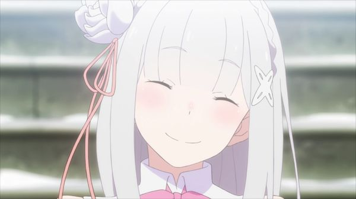

Who is Emilia?
Emilia is a white-haired, half-elf, half-human character of Re:Zero, a popular Japanese series. She is currently a candidate in the royal-selection. That is, she could potentially become the queen of the main country in Re:Zero. Emilia is also a magician! She can cast ice-magic, and summon the help of lesser spirits. You will always see Emilia with her trust companion, Puck, a cat-like spirit who protects her at all costs. Lastly, to many seasoned Re:Zero fans, she is the best girl! Seriously though, who is Rem?
Here is a picture of Emilia!
What's Re:Zero? I'm interested in it!
I'm glad that hearing about Emilia has made you interested in Re:Zero! Since you've never heard of Re:Zero, let's start from the basics.
Re:Zero is a part of the TV genre of Anime. Simply, Anime can be considered as Japanese Cartoons. Re:Zero's full English name is "Re:Starting Life From Zero in a Different World", while its Japanese name is Re:ゼロから始める異世界生活. The show is about Subaru Natsuki, a hikikomori or NEET (not in education, employment, or training) who is suddenly teleported into a fantasy world. Personally, Re:Zero is my favourite Anime. Its genres of isekai (characters being suddenly transported to different worlds), fantasy, magic, and thriller make this show exceptionally immersive, leaving you wanting to watch the next episode immediately.
This page is about Emilia, so if you're interested in watching Re:Zero, I would highly recommend checking out the following links:
- Read more on MyAnimeList
- Watch it on Crunchyroll